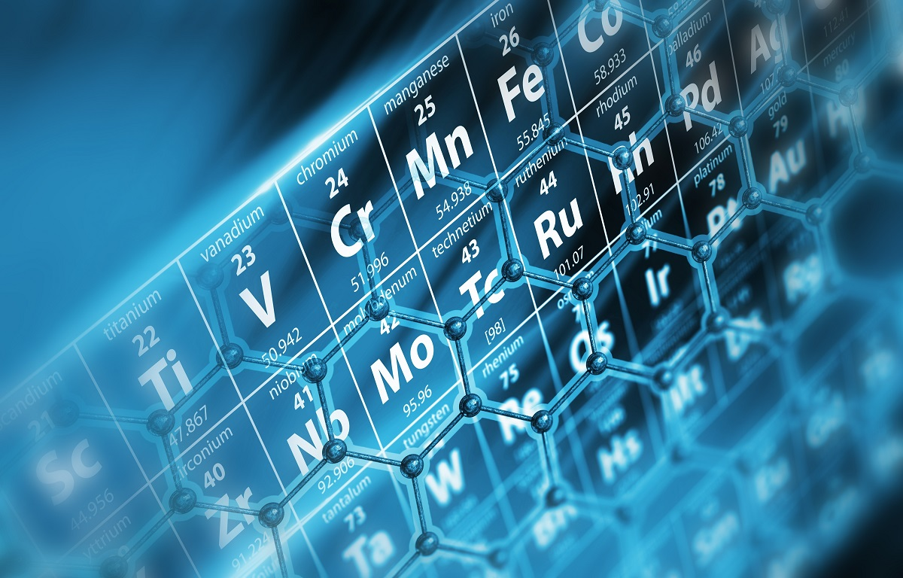

Material science plays a crucial role in the semiconductor industry as it helps in the development of new materials and technologies that can improve the performance, efficiency, and cost-effectiveness of semiconductor devices.
While silicon has been the foundational material for decades, the push for smaller, faster, and more efficient chips requires new materials like Silicon Carbide (SiC) and Gallium Nitride (GaN). These materials offer better thermal conductivity and electrical properties, making them ideal for high-power and high-frequency applications.
As we approach the physical limits of scaling (sub-3nm nodes), issues like quantum tunneling and heat dissipation become major hurdles. Material scientists are actively exploring 2D materials like Graphene and Transition Metal Dichalcogenides (TMDs) to overcome these barriers and continue the trend defined by Moore's Law.
In summary, material science is the bedrock upon which future semiconductor innovations will be built. It is an indispensable part of designing the next generation of electronic devices.